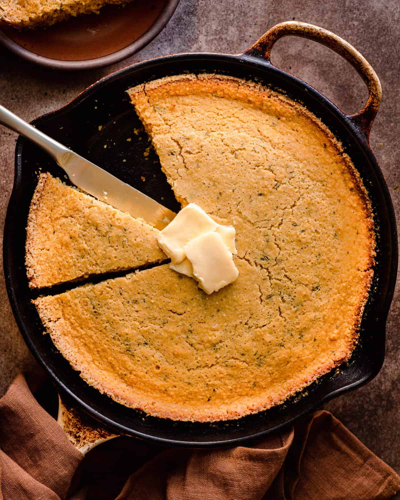

Cornbread Recipe

Here's what the cornbread will look like!
If you follow the instructions in this recipe you'll be able to make a
delicious vegan cornbread that will not be dry.
Ingredients
- 1 1/2 cups full fat oat milk
- 2 tsp apple cider vinegar
- 1 1/2 cups stone ground yellow cornmeal
- 3/4 cup all purpose flour
- 1 Tbsp + 1 tsp baking powder
- heaping 1/2 tsp sea salt
- 4 Tbsp vegan butter + 2 Tbsp for greasing the skillet
- 1/4 cup evoo
- 1/4 cup organic brown sugar
- 1/4 cup agave nectar
- 1 heaping Tbsp finely chopped rosemary
Instructions
- Preheat the oven to 400ºF/204ºC and arrange a middle rack in the oven. Stir the vinegar into the oat milk and set aside for 5-10 minutes to slightly curdle.
- In a large bowl, combine the flour, cornmeal, baking powder, and salt. Whisk well to break up any clumps.
- Make a well in the center and pour in the 4 tablespoons melted vegan butter, oil, brown sugar, agave, and buttermilk. Gently mix with a whisk until just smooth, taking care to not overmix – there will be lumps, that’s okay!
- Fold in the rosemary using a silicone spatula. Allow the batter to rest for 10 minutes, or up to 1 hour. It should look somewhat like a pancake batter.
- Meanwhile, transfer a 9- or 10-inch cast iron skillet to the pre-heated oven to heat up for 10 minutes. Remove the pan from the oven (use oven mitts!) and add the 2 tablespoons of vegan butter. It will start melting almost immediately. Dust the pan lightly with a sprinkle of cornmeal, about 1 teaspoon.
- Pour the cornbread batter into the hot skillet (but not too quickly or the butter will pool up to the top). Bake for 25 to 28 minutes (check at 25 minutes), until a toothpick inserted in the center comes out clean and the top is golden brown.
- Transfer to a wire rack and allow to cool for 15 to 20 minutes before slicing. Serve warm, or with a pat of softened vegan butter on top of each slice, if desired.
Store leftovers in an airtight container for up to 3 days on the counter.
- If making the maple butter, add the softened butter to a small bowl and whisk vigorously until it starts to get fluffy. Add the maple syrup and whisk until well combined and smooth.